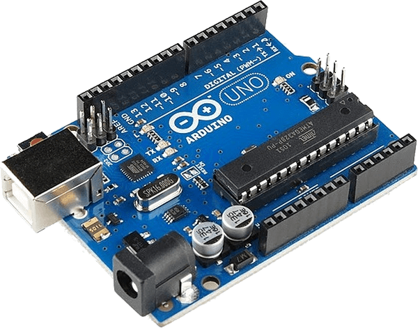
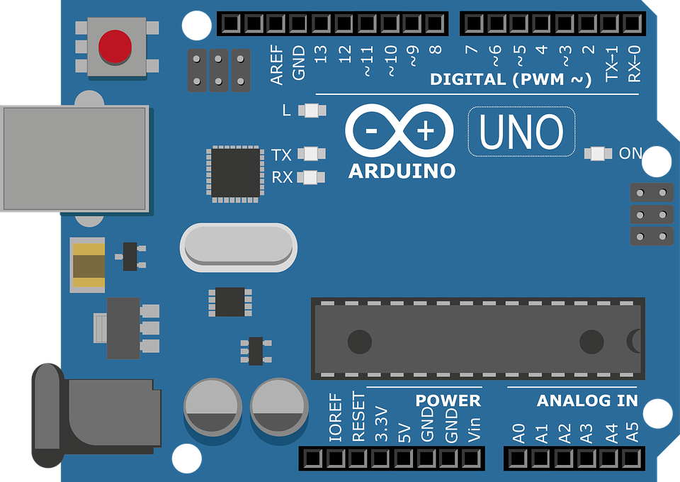
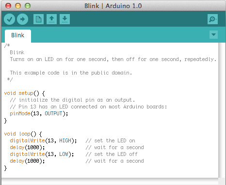
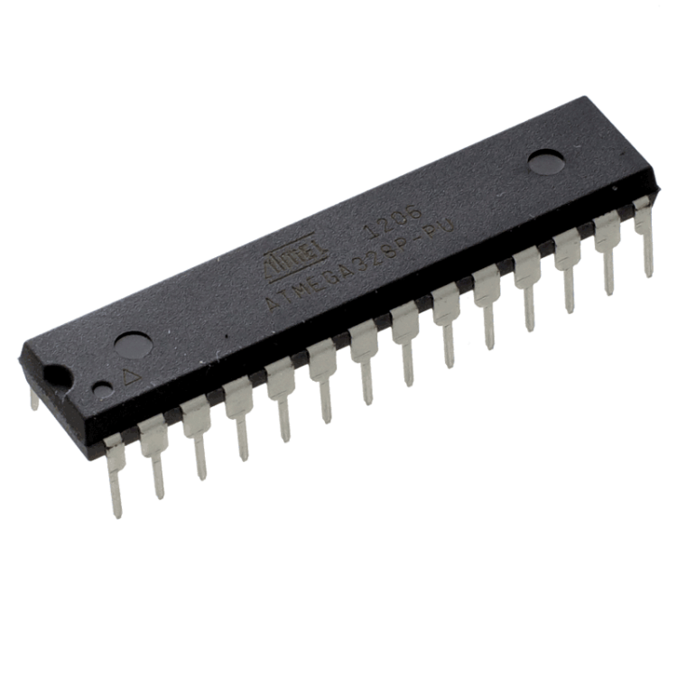
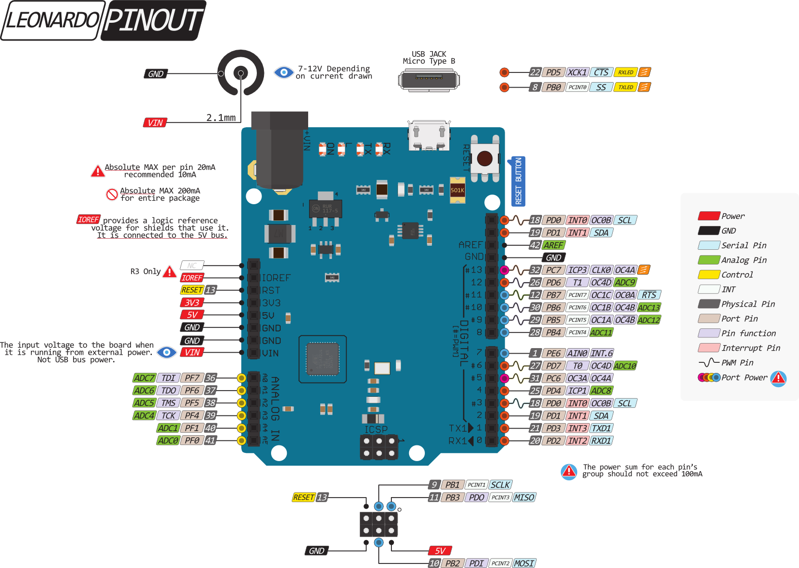

Arduino è una scheda open-source cioè con licenza libera, utilizzata per
costruire progetti di robotica, elettronica e automazione.
Arduino è una scheda programmabile con microcontrollore e compresa di
una parte software, o IDE, che eseguita su un computer, viene usata per
scrivere e caricare codice informatico (in linguaggio “C”) nella scheda
stessa.
Il progetto Arduino è stato creato per permettere ad artisti creativi,
designer e progettisti di prototipare e proggettare le loro idee senza
dover disporre di molte conoscenze tecniche.
Alla base di Arduino c`è l`idea di rendere la creazione di progetti
elettronici più veloce ed agevole ma sopratutto facile e alla portata di
tutti.
Arduino è una piccola scheda elettronica equipaggiata di un
microcontrollore centrale (il microcontrollore è il cervello del nostro
sistema) e di un po’ di componenti elettronici così da rendere più
semplice il collegamento con dispositivi esterni di vario tipo.
Arduino è stato reso famoso grazie ad un`altra caratteristica
fondamentale, una rivoluzione nel mondo dell’elettronica è il fatto che
il suo circuito elettronico sia stato “rilasciato con licenza
opensource”, questo significa che chiunque può riprodurre una scheda
Arduino in casa, sia per scopo hobbistico che per scopo commerciale e
iniziare la propria attività di produzione schede in casa senza dover
preoccuparsi di alcun tipo di licenza. Arduino è una scheda di
dimensioni ridotte con un microcontrollore ATmega328, grazie a questo
utile componente si possono creare in modo semplice prototipi per usarli
nel campo hobbistico, professionale e didattico.
Infatti grazie ad Arduino si possono realizzare in maniera semplice
dispositivi in grado di controllare luci, la velocità dei motori,i
servomotori, i sensori di luminosità, temperatura e umidità e tanti
altri progetti.
La scheda inoltre è fornita di un ambiente di sviluppo semplice
utilizzato per la programmazione.
Tutto il software è Open Source, e gli schemi dei circuiti si possono
trovare su internet con estrema facilità.
Arduino si basa su un microcontrollore installato su una scheda con pin
connessi alle porte I/O, un regolatore di tensione e un'interfaccia USB
la quale permette di comunicare con il computer.
Con Arduino viene affiancato un software che permette anche a chi non sa
nulla di programmazione di scrivere programmi con un linguaggio semplice
e intuitivo derivato da C e C++ comunemente chiamato anche Wiring, la
grande novità sta nel fatto di essere libero e modificabile.
I vari programmi sul software in Arduino vengono chiamati sketch.
Arduino è distribuito in versione pre-assemblata, dove si può acquistare
su internet sul sito arduino.cc, su gli e-commerce o in alcuni negozi di
elettronica.
Arduino è stato creato nel 2001 e dopo tanti anni di sperimentazione è
possibile trovare un database di informazioni illimitato.
Per creare l`ambiente di sviluppo (IDE) Arduino necessita di un'applicazione scritta in linguaggio Java, derivata dall'IDE creato per la programmazione di Processing e per il progetto Wiring. Questa programmazione semplice è stata concepita per aiutare nella programmazione chi vuole creare con Arduino non conoscendo il linguaggio di programmazione o chi non pratica nello sviluppo di software. L'IDE include un editore di testo per consentire la stesura del codice di programmazione, L'editor inoltre è in grado di verificare la correttezza del programma, compilarlo e eseguirlo autonomamente con un solo click. Con il software vengono scaricati anche vari sketch di esempio, per aiutare l'utente a programmare la board; I temi sono molto ampi e vari ma anche molto basilari. Ad esempio si possono gestire gli ingressi digitali e analogici, far accendere e spegnere un diodo led. Si possono trovare anche problemi più complessi come la gestione di una scheda telefonica GSM o Il funzionamento di un display LCD. Per vedere i risultati di uno un programma dall'IDE si può attivare un monitor seriale, sul monitor vediamo comparire le istruzioni seriali con il parametro Serial.print inserito nello sketch stesso.
Il codice sorgente è formato da due sezioni: –setup(); –loop().
• setup() è la funzione che viene eseguita solo all’apertura dello sketch, circa 5 secondi dopo l’accensione o il reset della scheda. In questo blocco possiamo effettuare le inizializzazioni necessarie al programma, come ad esempio l’impostazione dei valori iniziali delle variabili, le modalità di uso dei pin (input, output ecc.) e l’inizializzazione delle librerie utilizzate.
• loop() è il programma principale, le istruzioni contenute al suo interno vengono eseguite ciclicamente fino allo spegnimento della scheda. Quando lo colleghiamo a una fonte di alimentazione, come ad esempio un cavo USB connesso al computer oppure una batteria da 9 V, viene avviato il programma caricato. La scheda Arduino è in grado di interagire con l’ambiente in cui si trova ricevendo informazioni da una grande varietà di sensori, ma anche da luci, LED, motori e altri attuatori.




